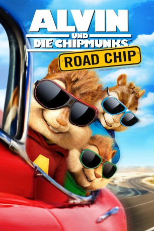

gesehen am 04.04.2016
gesehen am 04.04.2016Alternativ: Alvin and the Chipmunks: The Road Chip gesehen am 04.04.2016
 
 IMDB-Wertung: 5.1 / 10
IMDB-Wertung: 5.1 / 10  Metascore:
Metascore: 
Durch eine Verkettung unglücklicher Umstände kommt es den Chipmunks zu Ohren, dass Dave seiner neuen Freundin in New York einen Heiratsantrag machen will. Durch ein Missverständnis glauben die drei singenden Nager plötzlich, dass Dave seine drei tierischen Freunde gegen eine feste Beziehung mit seiner Angebeteten eintauschen – sie also loswerden – will. Kurzerhand begeben der mutige Alvin, der schlaue Simon und der kleine Theodore sich also auf einen dreitägigen Road Trip nach New York City, um die drohende Verlobung zu verhindern.
Jahr: 2015
Dauer: 92 Minuten
FSK:
Land: USA Studio: 20th Century FoxTonspuren:
Untertitel: Deutsch,
Auflösung: 1080p (1920x1036) Größe: 5857 MB
Genre: Musik, Komödie, Abenteuer, Fantasy, Animation/Trick, Familie
Regisseur:  Walt Becker
Walt Becker
Drehbuch: Ross Bagdasarian, Janice Karman, Randi Mayem Singer, Adam Sztykiel
Soundtrack: Mark Mothersbaugh
Darsteller:
 Jason Lee als Dave
Jason Lee als Dave Justin Long als Alvin
Justin Long als Alvin Matthew Gray Gubler als Simon
Matthew Gray Gubler als Simon Jesse McCartney als Theodore
Jesse McCartney als Theodore Kimberly Williams-Paisley als Samantha
Kimberly Williams-Paisley als Samantha Tony Hale als Agent Suggs
Tony Hale als Agent Suggs Bella Thorne als Ashley Grey
Bella Thorne als Ashley Grey Christina Applegate als Brittany
Christina Applegate als Brittany Kaley Cuoco als Eleanor
Kaley Cuoco als Eleanor Anna Faris als Jeanette
Anna Faris als Jeanette Joshua Mikel als Wyatt the Pizza Guy
Joshua Mikel als Wyatt the Pizza Guy Jeremy Ray Taylor als Kid
Jeremy Ray Taylor als Kid Jennifer Coolidge als Ms. Price
Jennifer Coolidge als Ms. Price Uzo Aduba als TSA Officer
Uzo Aduba als TSA Officer Retta als Party Planner
Retta als Party Planner John Lacy als Owner
John Lacy als Owner Mark Jeffrey Miller als Cab Driver
Mark Jeffrey Miller als Cab Driver Flula Borg als Man Behind Mask
Flula Borg als Man Behind Mask Laura Marano als Hotel Baby Sitter
Laura Marano als Hotel Baby Sitter Onira Tares als First Record Executive
Onira Tares als First Record Executive Leticia Jimenez als Second Record Executive
Leticia Jimenez als Second Record Executive Charmin Lee als Judge
Charmin Lee als Judge John Waters als First Class Passenger
John Waters als First Class Passenger Greg Pitts als Pool Attendant
Greg Pitts als Pool Attendant Kati Akins als High Class Austin Woman , uncredited
Kati Akins als High Class Austin Woman , uncredited Tamila Bilalova als Resident , uncredited
Tamila Bilalova als Resident , uncreditedDatei: X:\Kinder Collections\Alvin und die Chipmunks\Alvin und die Chipmunks 4 - Road Chip (2015, FSK, 1920x1036).mkv seit 04.04.2016
Festplatte: Kinder-Filme+Trick
 Es gibt insgesamt 7 Filme in der Gruppe 'Kinder Collections\Alvin und die Chipmunks'
Es gibt insgesamt 7 Filme in der Gruppe 'Kinder Collections\Alvin und die Chipmunks'